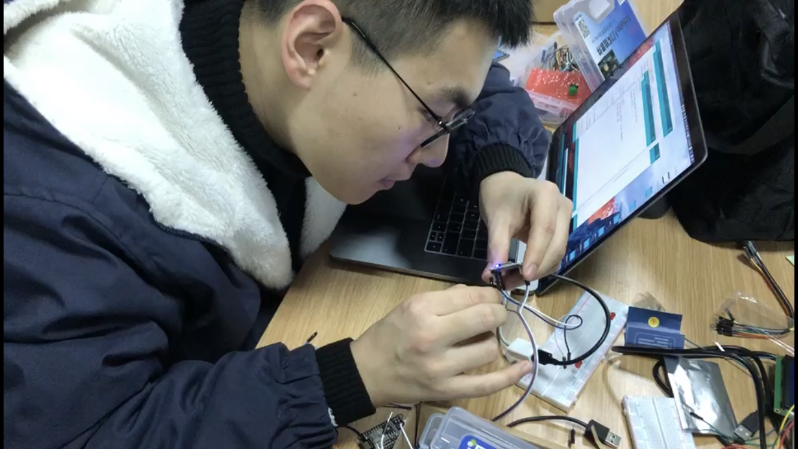
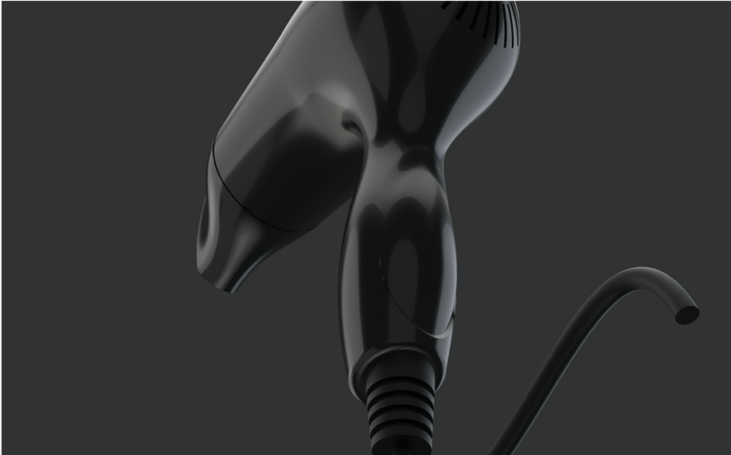
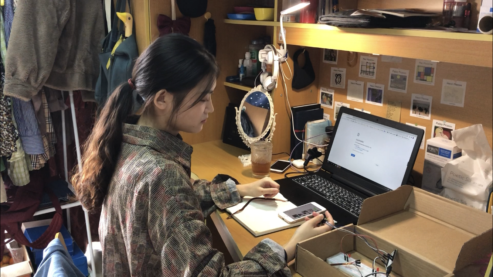
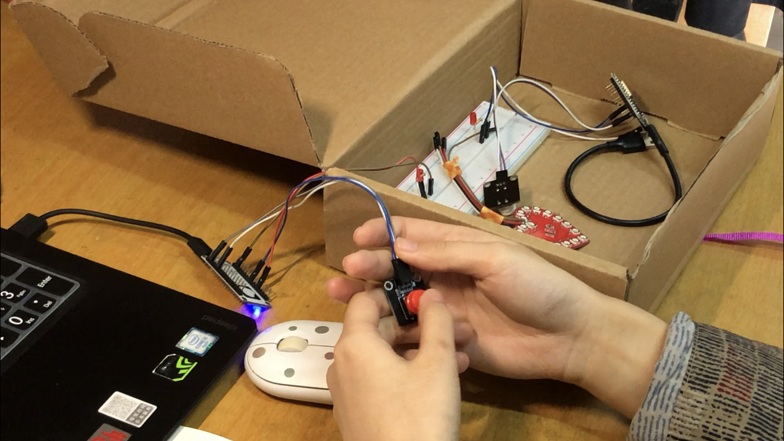
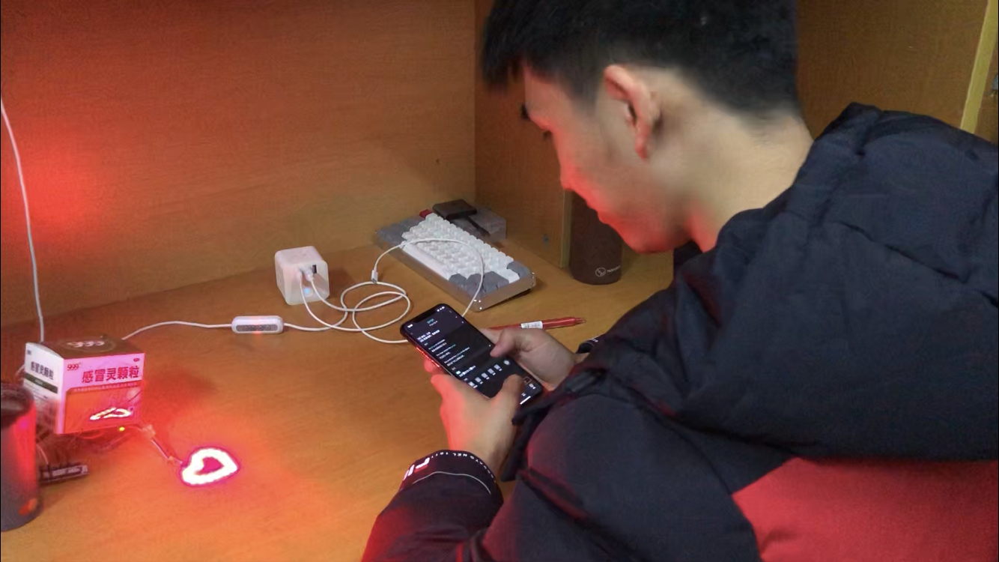

Even though couples are in different places, with the help of this product, long-distance lovers have a "missing link" that turns invisible thoughts into flickering light, like a heartbeat signal.
The "Missing Signal" is designed for couples who are separated and in love, combined with the IoT technology background, using Arduino components. When one of the couples misses the other, they can click the "Missing Button" and the other couple will receive the signal instantly and the light will blink on, which is the "Missing Signal".
“思念的信号”是专为异地分居而又处于热恋的情侣所设计、结合IoT技术背景下，利用Arduino部件组成。当情侣中的一方想念对方时，可以点击“思念的按钮”，另一方就会即时地收到这个信号，灯就会闪烁亮起，这就是“思念的信号”。
This product allows couples to send their thoughts in real time over the Internet to each other anywhere in the world. Even though couples are in different places, with the help of this product, long-distance lovers have a "missing link" that turns invisible thoughts into flickering light, like a heartbeat signal.
这款产品可以帮助情侣实时通过网络将他们的思念信号发送给处于全球任何一个位置的对方。尽管情侣身处异地，但是，在这款产品的帮助之下，异地恋情侣有了“思念的纽带”，让无形的念想转化为闪烁的光芒，犹如心动的信号。
Sources of Inspiration
灵感来源
For couples, long-distance relationships can be fraught with hardships and a lot of heartache, and although the Internet has made it easier for long-distance lovers to communicate with each other through a series of electronic devices, these methods still don't make it possible for long-distance lovers to interact in a warm and fun way.
对情侣而言，异地恋可能会充满艰辛，诸多的相思之痛很难得到抚慰，尽管互联网时代下的一系列电子设备已成为异地恋情侣之间相互联络的便捷途径，但细细看来，这些方式仍无法让异地恋情侣进行更加有温度且有趣的交流与互动。
However, as technology advances, long-distance couples will be able to take advantage of the latest technology, such as IoT technology, to enhance interaction and communication.
不过，随着科技的发展，异地恋情侣也将能够充分利用最新科技的优势，比如IoT技术，来加强互动与交流。
Design Process
设计过程
We first assemble and debug the hardware components and programs separately.
我们先把硬件方面的元器件和程序分别组装和调试好。
 Then we quickly wrote the script for the product mini-theater, and each team member worked on his or her own part, creating the script in an orderly fashion.
接着我们很快编写了产品小剧场的分镜剧本，小组成员各司其职，有序展开了创作。
  Technical Section
技术实现
We use the following components:
NodeMCU*2
Pushbutton switch*2
YYClub's heart-shaped light*2
Arduino UNO*2
Wires, Resistors
Ali Cloud Server
我们采用了以下元器件：
NodeMCU*2
按键开关*2
YYClub的心形灯*2
Arduino UNO*2
导线，电阻若干
阿里云服务器
Circuit diagram
电路图
Program Design
程序设计
#include
#include
#include
#include
#define SENSOR_PIN 13 //pin define
#define LED D4
#define SWITCH D5
#define PRODUCT_KEY "a1z4xHcSF1l"//exchange PRODUCT_KEY
#define DEVICE_NAME "LED2"//exchange DEVICE_NAME
#define DEVICE_SECRET "e33af9c38ab67e916bdfe55f9937a20f"//exchange DEVICE_SECRET
#define DEV_VERSION "S-TH-WIFI-v1.0-20190220"
#define WIFI_SSID "CST511"//exchange WIFI
#define WIFI_PASSWD "511888666"//exchange WIFI password
#define ALINK_BODY_FORMAT "{\"id\":\"123\",\"version\":\"1.0\",\"method\":\"%s\",\"params\":%s}"
#define ALINK_TOPIC_PROP_POST "/sys/" PRODUCT_KEY "/" DEVICE_NAME "/thing/event/property/post"
#define ALINK_TOPIC_PROP_POSTRSP "/sys/" PRODUCT_KEY "/" DEVICE_NAME "/thing/event/property/post_reply"
#define ALINK_TOPIC_PROP_SET "/sys/" PRODUCT_KEY "/" DEVICE_NAME "/thing/service/property/set"
#define ALINK_METHOD_PROP_POST "thing.event.property.post"
#define ALINK_TOPIC_DEV_INFO "/ota/device/inform/" PRODUCT_KEY "/" DEVICE_NAME ""
#define ALINK_VERSION_FROMA "{\"id\": 123,\"params\": {\"version\": \"%s\"}}"
unsigned long lastMs = 0;
int val=0;
WiFiClient espClient;
PubSubClient mqttClient(espClient);
void init_wifi(const char *ssid, const char *password)
{
WiFi.mode(WIFI_STA);
WiFi.begin(ssid, password);
while (WiFi.status() != WL_CONNECTED)
{
Serial.println("WiFi does not connect, try again ...");
delay(500);
}
Serial.println("Wifi is connected.");
Serial.println("IP address: ");
Serial.println(WiFi.localIP());
}
void mqtt_callback(char *topic, byte *payload, unsigned int length)
{
Serial.print("Message arrived [");
Serial.print(topic);
Serial.print("] ");
payload[length] = '\0';
Serial.println((char *)payload);
Serial.println("");
Serial.println((char *)payload);
Serial.println("");
if (strstr(topic, ALINK_TOPIC_PROP_SET))
{
StaticJsonBuffer<100> jsonBuffer;
JsonObject &root = jsonBuffer.parseObject(payload);
int params_LightSwitch = root["LightSwitch1"];
if(params_LightSwitch == 0)
{
Serial.println("Led on");
digitalWrite(LED,HIGH);
}
else
{
Serial.println("Led off");
digitalWrite(LED,LOW);
}
if (!root.success())
{
Serial.println("parseObject() failed");
return;
}
}
}
void mqtt_version_post()
{
char param[512];
//char jsonBuf[1024];
sprintf(param, "{\"id\": 222,\"params\": {\"version\": \"%s\"}}", DEV_VERSION);
//sprintf(jsonBuf, ALINK_BODY_FORMAT, ALINK_METHOD_PROP_POST, param);
Serial.println(param);
mqttClient.publish(ALINK_TOPIC_DEV_INFO, param);
}
void mqtt_check_connect()
{
while (!mqttClient.connected())//mqttδ
{
while (connect_aliyun_mqtt(mqttClient, PRODUCT_KEY, DEVICE_NAME, DEVICE_SECRET))
{
Serial.println("MQTT connect succeed!");
//client.subscribe(ALINK_TOPIC_PROP_POSTRSP);
mqttClient.subscribe(ALINK_TOPIC_PROP_SET);
Serial.println("subscribe done");
mqtt_version_post();
}
}
}
void mqtt_interval_post()
{
char param[512];
char jsonBuf[1024];
sprintf(param, "{\"LightSwitch2\":%d,\"Range2\":%d}", digitalRead(SWITCH), val);
sprintf(jsonBuf, ALINK_BODY_FORMAT, ALINK_METHOD_PROP_POST, param);
Serial.println(jsonBuf);
mqttClient.publish(ALINK_TOPIC_PROP_POST, jsonBuf);
}
void setup()
{
pinMode(SENSOR_PIN, INPUT);
pinMode(LED, OUTPUT);
/* initialize serial for debugging */
Serial.begin(115200);
Serial.println("Demo Start");
init_wifi(WIFI_SSID, WIFI_PASSWD);
mqttClient.setCallback(mqtt_callback);
}
// the loop function runs over and over again forever
void loop()
{
val = 100;
if (millis() - lastMs >= 5000)
{
lastMs = millis();
mqtt_check_connect();
/* Post */
mqtt_interval_post();
}
mqttClient.loop();
unsigned int WAIT_MS = 2000;
if (digitalRead(SENSOR_PIN) == HIGH)
{
Serial.println("Motion detected!");
}
else
{
Serial.println("Motion absent!");
}
delay(WAIT_MS); // ms
Serial.println(millis() / WAIT_MS);
}
Here's our video showcase 👇
以下是我们的视频展示 👇